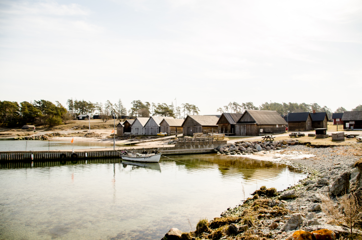
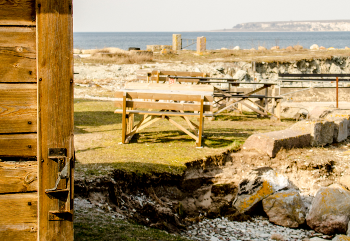

Djupviks hamn ligger på Gotlands västkust nästan rakt öster om Lilla Karlsö.
Hamnen är otroligt vackert belägen i anslutning till ett gammalt Gotländskt fiskeläge bestående av fiskebodar från sent 1800-tal.
Husen är grupperade i tre rader, mellan dem ligger gistgarden där man torkar nät och närmast stranden ligger båthusen.
Från fiskeläget har man fri utsikt mot de båda Karlsöarna.

Ansvaret för hamnen och fiskeläget har Djupviks hamnförening, som är en ideell förening som aktivt
verkar för att bibehålla och utveckla Djupvik som fiskehamn och som fritidsbåtshamn för de många närboende och sommarboende.
Föreningen driver en glasskiosk och kaffeservering på sommartid i ett gammalt båthus vid hamnen.

Ett par hundra meter ovanför hamnen ligger Djupviks Hotell, ett hotell med restaurang och bra standard.
Det finns även toaletter i hamnen varav en som är tillgänglighetsanpassad för rullstolar och rollatorer.
The Port of Djupvik is located on the east coast of Gotland very close to the beautiful smaller island Lilla Karlsö.
Adjacent to the port is a small and charming fishing-village which, during summer, comes to life with a relaxed and welcoming buzz.
Close by and situated with a fantastic view over the port is Djupvik Hotel, with modern standard and with its own popular restaurant.
Both the port and the fishing village have a beautiful view of two popular bird islands called “Lilla Karlsö” and “Stora Karlsö”.
The coastline south of Djupvik, called “Ekstakusten” is incredibly beautiful and invites to nice scenery and views on foot, by bike or by car.
North, and connected to the port, is a small sandy beach which is well soothed for a nice swim.
The distance from the port to Lilla Karlsö is about 2 nautical miles and it is about twice as long to Stora Karlsö (4nm).
For more information, check out the websites: lillakarlso.org and storakarlso.se. For information about Djupvik Hotel: djupvikhotel.com
Are you interested of visiting Djupvik by boat? The 24 hour rate is 150 sek including key to the service house and a 20 sek fee to the two showers.
A connection to the electricity is an additional 50 sek / 24 hour.
Please contact the port manager for more inquiries: Bo Lautin, cellnr: +46 707 920310